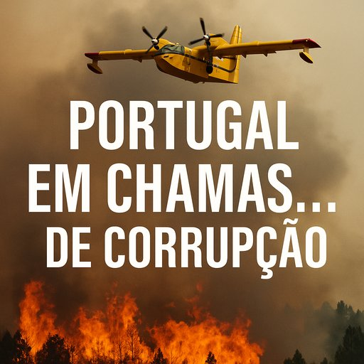

Publicado em 2025-06-03 20:43:58
Por Augustus Veritas
Portugal, o país das paisagens ardentes e da solidariedade de verão, está de novo envolto em fumo. Mas desta vez, o fumo não vem só das matas em combustão — vem dos papéis, dos contratos e dos corredores ministeriais onde os esquemas ardem com discrição. A Polícia Judiciária investiga agora o que parece ser um esquema concertado para inflacionar os preços dos meios aéreos de combate aos incêndios em 30%. E mais grave: isto já dura há anos.
Isto não é um lapso. É um modelo de negócio.
Nos dias em que as cinzas ainda pairam sobre as aldeias ardidas, o Estado prepara-se para assinar mais um contrato "em cima da hora", por um valor inflacionado. É um ciclo de cinismo e conveniência. O fogo é apenas o pano de fundo; o verdadeiro incêndio arde nos gabinetes.
O que assusta não é apenas o valor do prejuízo financeiro — é a constatação de que as estruturas do Estado estão vulneráveis, capturadas e servem interesses privados.
A população assiste, ano após ano, a mais uma época de fogos, mais uma cerimónia de luto, mais uma promessa de "mudança estrutural". Mas no fim, os helicópteros são alugados à pressa, os contratos feitos à medida, e os autores morais escapam com medalhas e subsídios.
Em Portugal, o fogo que devasta é muitas vezes menos letal que a corrupção que se oculta sob as suas cinzas.
Enquanto não se combater a máquina de interesses que sobrevive à custa do desespero alheio, Portugal continuará a arder: nas florestas, nas contas públicas e na consciência cidadã.
O fumo não é só de eucaliptos. É de papéis queimados, éticos e legais.
Se não se deitar água nisto, os incendiários do sistema continuarão a enriquecer com cada verão que passa. E nós, os mesmos de sempre, a pagar a conta, a chorar os mortos e a reconstruir ruínas que não foram naturais, mas planeadas com mestria.